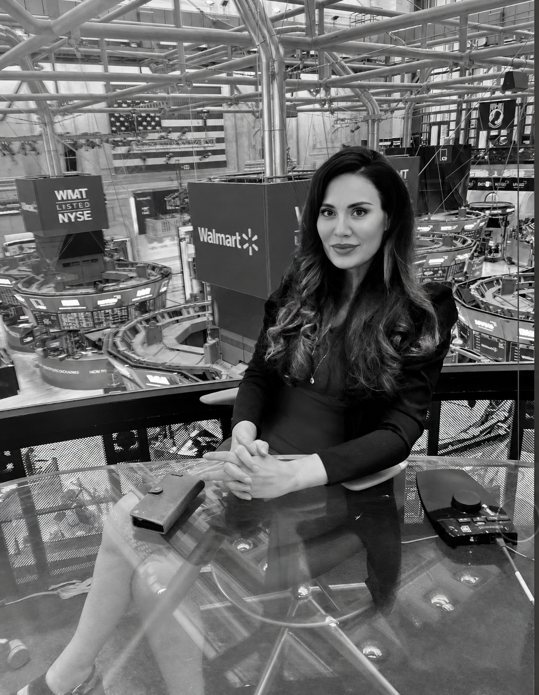

The Leader Interview
Deep questions for founders, executives, public figures, and operators with a real point of view.
ListenMedia Strategist · Commentator · Podcast Host
Nadja Atwal hosts conversations with leaders, creators, and changemakers shaping business, technology, culture, and society.
The Show
Perceived Reality looks at the stories people repeat, the systems behind them, and the people reshaping what comes next. The format is built for ambitious listeners who want context, not noise.
The show’s public podcast description positions Nadja as a media strategist and commentator leading interviews with global leaders, creators, and changemakers across business, tech, and society.
About Nadja Atwal
Nadja Atwal is a Manhattan-based award-winning media architect, PR strategist, and business advisor, recognized for helping companies accelerate growth through strategic positioning, high-level access, and narrative control. She operates at the intersection of media, business, and emerging technologies.
She serves as a trusted advisor and Chief Advisor to multiple U.S. and international companies, often holding equity stakes and working closely with leadership teams on market entry, brand authority, and strategic expansion. Nadja is part of the leadership board of the Global AI Council and is actively involved in several AI and deep-tech ventures shaping the next generation of innovation.
A highly sought-after speaker, moderator, and panel host, Nadja is regularly featured at leading global platforms and industry events, including CES, HUMAN X, and the World Economic Forum in Davos, where she engages with top executives, investors, and policymakers. She is also a recognized media presence at these events, further amplifying her influence across business and technology ecosystems.
Nadja is the host of a top-ranking U.S. podcast, with highlights airing on CNBC, where she interviews leading CEOs, investors, and thought leaders. Known for her distinctive format, she conducts interviews from iconic business locations in the United States, including the New York Stock Exchange and the World Trade Center, positioning her at the center of global business conversations.
Originally starting her career as a journalist and foreign correspondent for major German media outlets, Nadja has evolved into a high-impact operator and entrepreneur, combining media influence with hands-on execution and deep strategic insight.
She is known for transforming executives into recognized thought leaders—elevating their visibility, positioning, and influence—and for guiding clients from investing in speaking opportunities to becoming sought-after, paid speakers themselves.
Her core strength lies in helping companies and leaders gain visibility, build credibility, and unlock high-value relationships—making her a sought-after advisor for startups and established companies looking to scale, enter new markets, and lead in their industries.

Conversation Map
Featured Format
Deep questions for founders, executives, public figures, and operators with a real point of view.
ListenStories behind trends, perception shifts, public narratives, and the forces shaping attention.
ListenSharper conversations around technology, society, influence, and what people misunderstand first.
ListenListen on Spotify
“The most powerful conversations do not repeat reality. They challenge the version people accepted too quickly.”Nadja Atwal · Perceived Reality
Booking and Media
Use this section to connect Nadja’s team, promote media bookings, or send guests directly into a submission form.
Replace this placeholder with Nadja’s official booking email or contact form link.